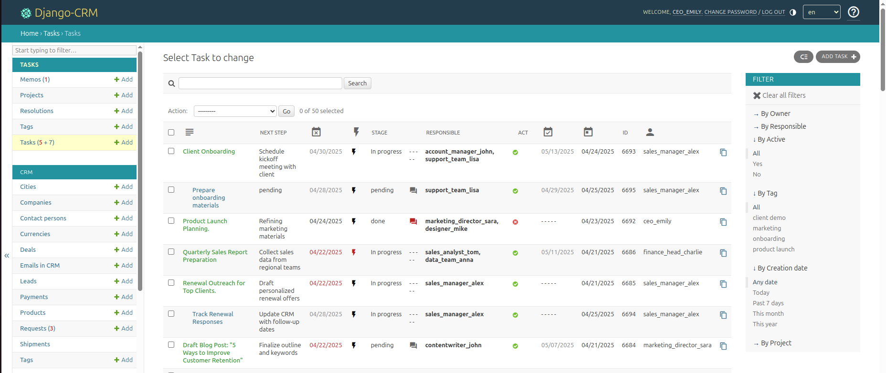
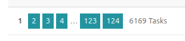
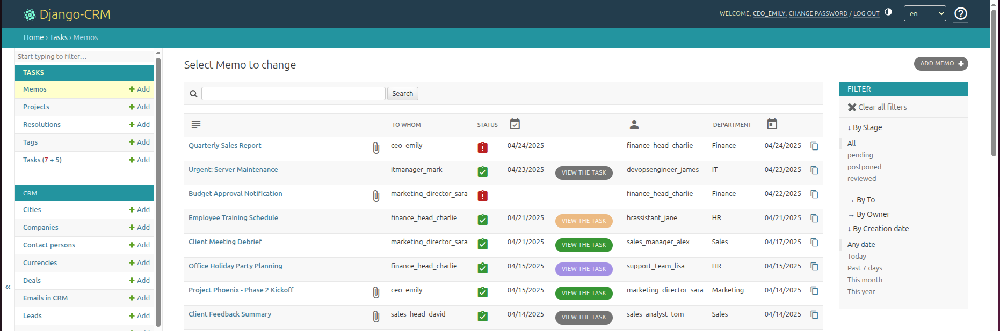

Dominio de la gestión eficiente de tareas del CRM: organice, delegue y colabore
El software de gestión de tareas es una parte integral del sistema Django CRM, brindando a los usuarios las herramientas necesarias para organizar, asignar y supervisar tanto actividades individuales como del equipo. Ya sea que esté gestionando tareas diarias o supervisando proyectos a gran escala, la aplicación de Tareas ofrece un marco sólido diseñado para apoyar flujos de trabajo eficientes en equipos y departamentos.


La representación tabular de las tareas ofrece a los usuarios del CRM una visión clara y estructurada, facilitando la gestión y priorización de un gran volumen de tareas de manera eficiente. Esto permite a los usuarios escanear rápidamente, comparar con facilidad y ordenar o filtrar la información de manera efectiva, priorizar y gestionar su carga de trabajo con mayor éxito, y facilita el seguimiento de las tareas sin abrumar a los usuarios con información innecesaria.


Funciones clave del gestor de tareas del CRM
El gestor de tareas proporciona una interfaz intuitiva para crear, organizar y seguir el progreso de tareas, proyectos y notas del CRM (memorandos internos).
Está diseñado para potenciar la colaboración, mantener a los equipos en marcha y garantizar que las tareas se completen a tiempo.
Estas son las características que lo distinguen:
Gestión completa de tareas:
- Cree fácilmente tareas adaptadas a objetivos o responsabilidades específicas.
- Cada tarea puede tener varias subtareas, lo que permite desglosar tareas complejas en partes más pequeñas y manejables.
- Las tareas se categorizan por prioridad y estado, ayudando a los usuarios a enfocarse en el trabajo urgente o pendiente.
- Las tareas pueden asignarse a personas o miembros del equipo, asegurando una responsabilidad clara.
- Los usuarios que necesitan estar informados sobre una tarea y su progreso, pero que no participan directamente en su ejecución, también pueden asignarse como suscriptores de esa tarea.
Gestión avanzada de proyectos:
- Agrupe tareas relacionadas en proyectos, lo que permite un enfoque estructurado y detallado para gestionar múltiples asignaciones.
- Asigne proyectos y tareas a personas o equipos específicos, promoviendo una propiedad y responsabilidad claras.
Funciones integradas para una mejor colaboración:
- Utilice etiquetas para categorizar tareas o proyectos y aproveche vistas filtradas para una navegación más sencilla.
- Adjunte y comparta archivos, proporcionando recursos y documentos necesarios directamente dentro del sistema.
- Cada tarea cuenta con su propia sección de chat para discusiones, haciendo que la comunicación esté enfocada en los objetivos entre los miembros del equipo asignados a la misma tarea o proyecto.
- La funcionalidad integrada de recordatorios ayuda a asegurar que se cumplan los plazos a tiempo y minimiza los horarios perdidos.
- Las notificaciones se envían dentro del CRM y por correo electrónico, asegurando que cada miembro del equipo reciba avisos inmediatos sobre actualizaciones de tareas, nuevas asignaciones o cambios en los plazos, manteniendo a todos informados y listos para actuar con rapidez.
Mejore su flujo de trabajo con los memorandos: notas del CRM
Un memorando no es solo una nota del CRM que los usuarios escriben para sí mismos; también es un memorando de oficina y una nota de servicio.
La función de memorandos del CRM está diseñada para simplificar la comunicación y la delegación de tareas entre diversas unidades organizativas, como marketing, atención al cliente y operaciones. Los memorandos son una herramienta versátil para documentar y compartir información, tomar decisiones o asignar responsabilidades. Ya sea para enviar actualizaciones importantes a la dirección o a los miembros del equipo, los memorandos aseguran que todas las comunicaciones se gestionen de manera efectiva: cree y comparta memorandos de oficina para información o instrucciones críticas.
Convierta los memorandos en tareas o proyectos accionables, proporcionando una forma sencilla de dar seguimiento a los elementos de acción derivados de las comunicaciones organizativas.


Controle el progreso de las tareas asociadas a las notas directamente desde la lista de memorandos, manteniendo a los equipos enfocados e informados.
Las notas del CRM pueden crearse para usted mismo, líderes de departamento o gerentes directamente desde la sección de Tareas o incluso enlazarse a acuerdos comerciales, manteniendo una conexión clara entre objetivos y resultados.
Los memorandos admiten archivos adjuntos, recordatorios y discusiones de chat integradas para colaboración en tiempo real entre los participantes.
Una vez revisados, los memorandos pueden transformarse en tareas o proyectos accionables. Estas acciones se registran dentro del CRM y se vinculan al memorando original para facilitar su referencia.
La función de memorandos de Django CRM empodera a las empresas con herramientas efectivas de comunicación y toma de decisiones, asegurando que los equipos puedan actuar sobre información valiosa sin esfuerzo.
Beneficios de utilizar el gestor de tareas del CRM
Delegación eficiente de tareas:
- Los gerentes y líderes de equipo pueden asignar tareas a empleados o equipos, asegurando una distribución adecuada de la carga de trabajo.
- Las tareas y su progreso permanecen visibles, brindando a la dirección un mejor control sobre el estado de las tareas y la responsabilidad.
Colaboración mejorada entre equipos:
- Al combinar la gestión de tareas con funciones integradas de chat y uso compartido de archivos, los miembros del equipo pueden evitar retrasos y malas comunicaciones.
- Las conversaciones y recursos relacionados con las tareas se almacenan centralmente, facilitando la referencia posterior cuando sea necesario.
Transparencia en el seguimiento del progreso:
- La priorización de tareas, los estados y los plazos permiten a todas las partes interesadas comprender claramente el estado de cada responsabilidad.
- Una mejor visibilidad admite una toma de decisiones más rápida y la mitigación de riesgos para actividades sensibles al tiempo.
Adaptabilidad para diferentes escenarios empresariales:
- La flexibilidad para asignar tareas a personas o grupos y organizarlas en proyectos significa que la aplicación puede adaptarse a una variedad de industrias.
- Desde el seguimiento de proyectos para equipos de software hasta la gestión de tareas relacionadas con ventas para usuarios del CRM, la aplicación admite diversos casos de uso.
Casos de uso para el CRM de gestión de tareas
La versatilidad de la aplicación de Tareas la convierte en una solución ideal para múltiples escenarios, entre ellos:
- Gestión de proyectos para equipos:
- Asigne tareas con plazos claros a los miembros del equipo y realice un seguimiento de su finalización dentro del contexto más amplio de un proyecto general.
-
Ideal para campañas de marketing, proyectos de desarrollo de software o gestión de procesos operativos.
-
Organización del flujo de trabajo de ventas:
-
Combine la aplicación de Tareas con funciones CRM como acuerdos y clientes potenciales para gestionar seguimientos de ventas, recopilación de documentos y negociaciones de contratos.
-
Coordinación de procesos internos:
-
Utilice memorandos y recordatorios para garantizar que los procesos internos, como actualizaciones de políticas o sesiones de entrenamiento del equipo, se ejecuten de forma eficiente.
-
Colaboración entre departamentos:
- Reúna departamentos como ventas, marketing, servicio al cliente y operaciones centralizando las tareas en una sola aplicación colaborativa.
Cómo funciona
- Crear y asignar tareas:
- Inicie nuevas tareas rápidamente proporcionando un título, una descripción, un responsable y una fecha límite.
-
Establezca subtareas dentro de tareas principales para gestionar dependencias.
-
Configurar proyectos:
- Agrupe tareas individuales en proyectos más grandes para una mejor supervisión.
-
Los proyectos también admiten la adición de archivos y adjuntos, actuando como repositorio para documentos relevantes.
-
Supervisar el progreso:
-
Consulte las tareas asignadas en tableros individuales o de equipo, incluyendo sus estados actuales, fechas de vencimiento y cualquier actualización.
-
Rastrear la comunicación en tiempo real:
-
Colabore con los participantes de la tarea directamente a través de canales de chat integrados y reciba actualizaciones rápidas.
-
Mantenerse informado:
- Reciba alertas generadas por el sistema para asignaciones de tareas, recordatorios, actualizaciones y finalizaciones, ofreciendo una experiencia completamente conectada.
El gestor de tareas ofrece un enfoque estructurado y confiable para gestionar el trabajo, asegurando que todas las tareas, proyectos y memorandos se gestionen de manera efectiva sin dejar huecos en la comunicación o la ejecución. Al integrar la gestión de tareas con la suite CRM, las empresas pueden mantener el enfoque en sus objetivos mientras aumentan la eficiencia y la transparencia.
Desde la gestión de roles individuales hasta la coordinación de grandes esfuerzos de equipo, la aplicación ofrece todas las herramientas necesarias para apoyar una fuerza laboral organizada y comprometida.